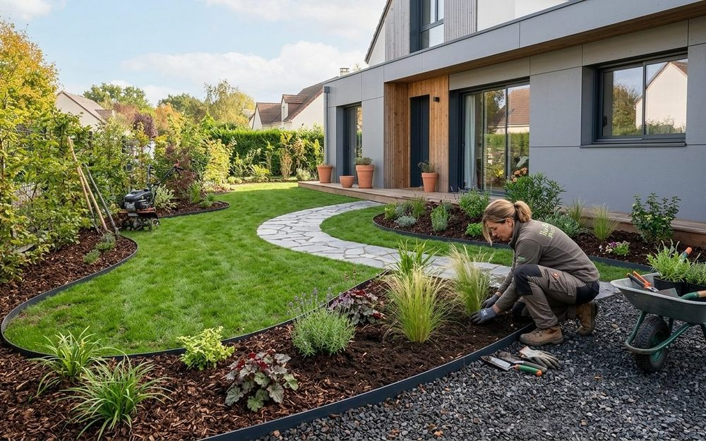
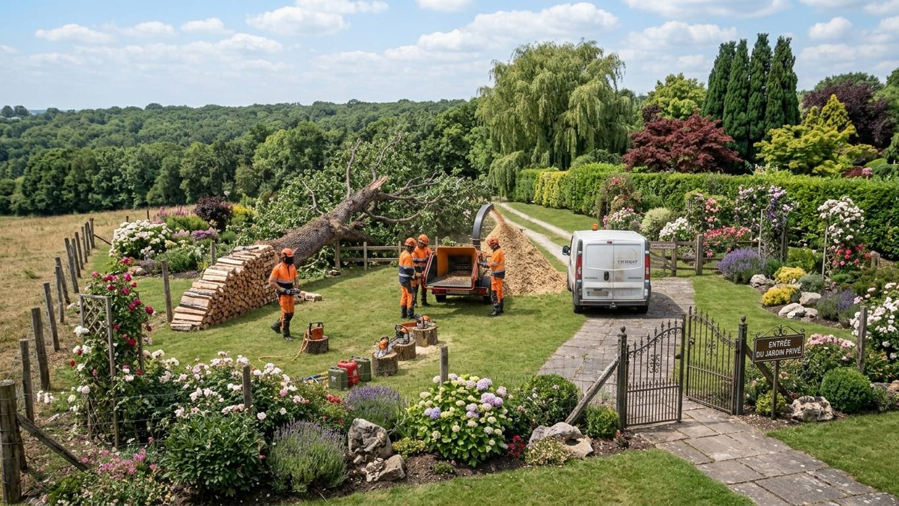

Création de jardins
Conception et réalisation de massifs, de pelouses et d'espaces de vie.
En savoir plus →
Paysagiste à Maule (78)
Garden Home Services crée et entretient jardins et espaces verts à Maule et alentours. Parlez de votre projet à Mathieu Bour.
Nos prestations
Création, plantation, engazonnement et entretien : des savoir-faire pour vos espaces verts.

Conception et réalisation de massifs, de pelouses et d'espaces de vie.
En savoir plus →

Tonte, taille de haies et désherbage des massifs, selon vos besoins.
En savoir plus →À propos
Mathieu Bour dirige Garden Home Services, entreprise de services d'aménagement paysager installée à Maule, dans les Yvelines.
Création, plantation et entretien d'espaces verts : appelez-le pour présenter votre projet.


Contact
Décrivez-nous votre projet : nous vous répondons pour préparer un devis.
Maule (78)
© MATHIEU BOUR (GARDEN HOME SERVICES) · Maquette de démonstration